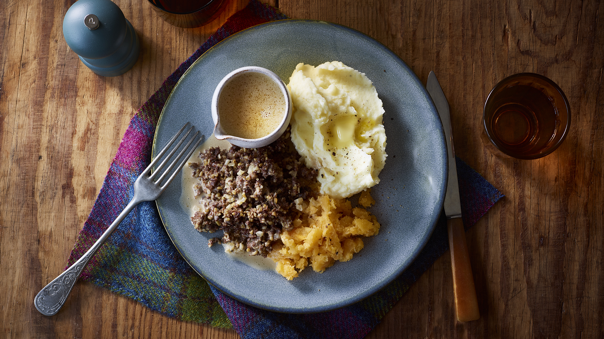

Haggis, Neeps, and Tatties

Description
The much-maligned national dish of Scotland. Rich, spicy haggis served with hearty mashed potato and turnip, and smothered in creamy whisky sauce. Don't knock it till you've tried it.
Ingredients
Tatties
- 1.5kg floury potatoes (e.g. Maris Piper, King Edward), peeled and cut into chunks
- 100ml semi-skimmed milk
- 200ml cream
- 2 tbsp butter
- salt and pepper
Neeps
- 1kg swede, peeled and cut into chunks
- 2 tbsp butter
Whisky cream sauce
- 4 tbsp cracked black pepper
- 50g butter
- 1 tsp vegetable oil
- 2 shallots, peeled and finely chopped
- 120ml Scotch whisky
- 200ml beef stock
- 200ml double cream
Method
- Cook the haggis according to the packet instructions.
- Meanwhile make the tatties. Cook the potatoes in a saucepan of salted boiling water for about 12-15 minutes until the chunks are soft and tender. Drain in a colander and allow to cool for 5 minutes to get a little fluffy on the outside. Mash the potatoes using a ricer. Heat the milk and cream in a saucepan until just simmering, then add to the mash with the butter. Season and mix until you have a smooth, creamy mash.
- To make the neeps, cook the swede in a saucepan of salted boiling water for about 12-15 minutes until the chunks are soft and tender. Drain in a colander. Add the butter and mash until smooth. Season with salt and pepper.
- To make the sauce, toast the pepper in a dry frying pan and set aside. Melt the butter and oil in the pan and add the shallots. Fry until fragrant and soft, but not browned. Pour in the whisky, turn up the heat and simmer for a second. Add the beef stock, then the cream. Bring to a boil, then reduce the heat and simmer for around 10 minutes or until reduced by about half. Stir in the cracked pepper.
- Serve the haggis, neeps and tatties with the whisky sauce on the side.
Home